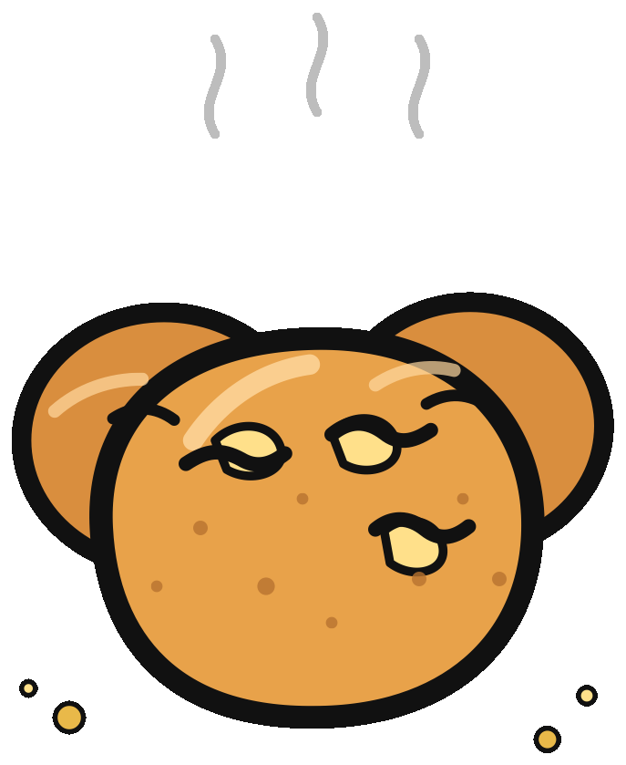

Puxando o causo…
Causo antigo, prosa nova
A Bíblia contada por um mineiro que num tem pressa.
Pega um café, puxa um banco e vem ler a Sagrada Escritura no miudinho, do jeito que mineiro conta causo: devagar, com graça e sem perder a fé.
219 versículos · 19 livros · uai incluso

pra ocê
Um recado antes da prosa
Pra minha amiga mineira, com carinho e café.
Que a cirurgia passe leve, que o susto vá embora rápido e que a recuperação seja mansa, regada a café fresquinho e pão de queijo quentinho. Ocê é mais forte do que imagina, e tem muita gente torcendo por ocê.
Com carinho, do seu amigo que num tem pressa.
Todo dia um causo
O versículo do dia
A prosa principal
Puxa o banco e escolhe o causo
Antigo Testamento
Gênesis 1
O que tem na sacola
Os livros da edição de bolso
Uma seleção de causos pra ler em qualquer canto — inclusive na sala de espera.
Ficha do causo
O que é a Bíblia Uai?
É uma adaptação carinhosa da BCC — Bíblia Clara Contemporânea — para o mineirês, feita pra ser lida sem pressa, com café do lado e pão de queijo na mão.
Num é tradução oficial, nem dogma, nem tese. É uma paródia afetuosa, uma forma de matar a saudade e lembrar que a fé também sabe sorrir.
Esta edição de bolso reúne 219 versículos de 19 livros. A ideia é crescer aos poucos, um causo por vez.
De onde veio
Fonte e licença
O texto foi adaptado da BCC, distribuída sob CC BY-SA 4.0. As adaptações em mineirês também são compartilhadas sob a mesma licença.
A BCC deriva da Bíblia Verbum Moderna, que deriva da Bíblia Livre. Atribuição e compartilhamento preservados.
Código do site: MIT. Texto: CC BY-SA 4.0. Feito com café, queijo e fé.